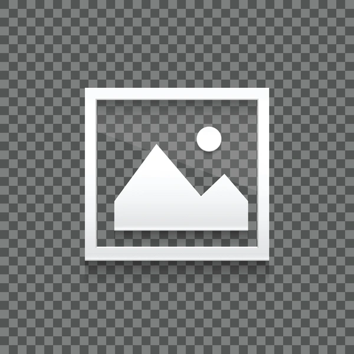

A szürke kockák titkai
A képen szürke kockák váltakoznak...
A fehér ikon titka
A kép közepén ott figyel a fehér ikon...
A kockák és az ikon
A kockák világos szürkéje és feketéje...
A szürke világ
A szürke kockák sorakoznak a képen...
A játék kezdete
A kockák mintha egy táblajátékot jelképeznének...
A kockák élete
A kockák egy sorozatot alkotnak...